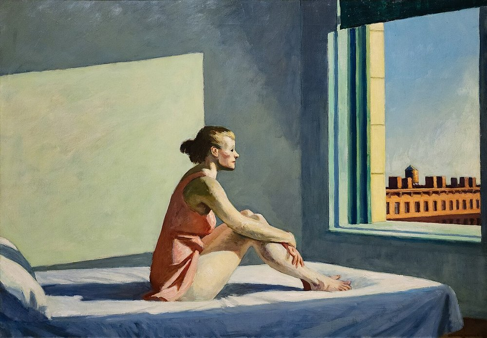

Morning Sun
Edward Hopper · 1952 · Oil on canvas · Columbus Museum of Art
In copyright. Look and learn: shown for study, not for download.
The woman is Hopper's wife, Jo, who modeled for most of his paintings; she was 69 years old when he painted this one. Jo is known to have given him a book on the art of Degas before he made it. The Columbus Museum of Art bought the painting in 1954 for $3,500.